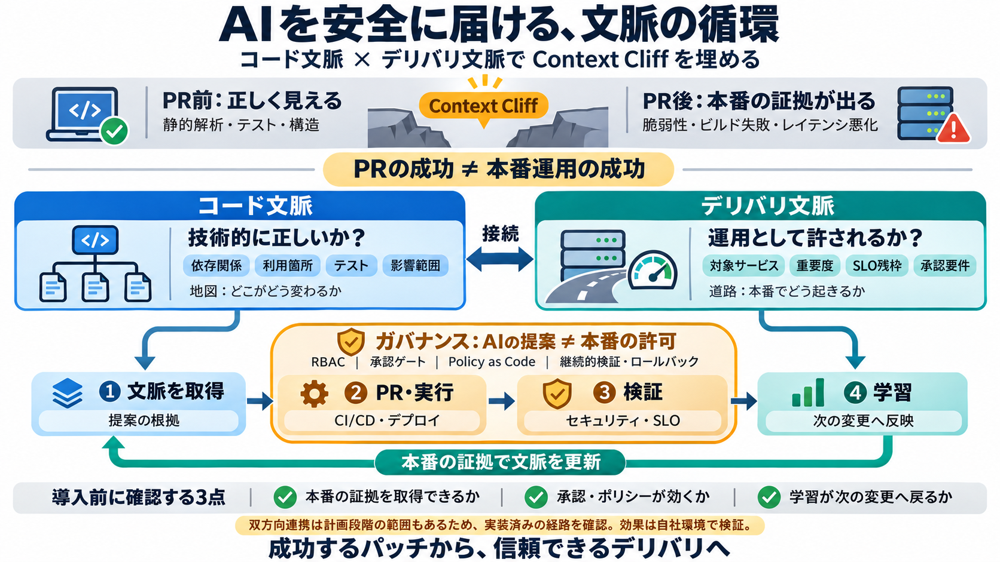

Harness Acquires Augment Code, Advancing the Autonomous SDLC from Idea to Production | Harness Press
No Headings SAN FRANCISCO, October 8, 2026 — Harness,the Autonomous SDLC PlatformTM company, today announced that it ha…

AI コーディングエージェントは PR 作成後、配信現場で初めて現れる証拠によって失敗し得ます。 そのギャップを埋めるために「コード」と「配信」を接続し、ガバナンスで閉ループ化します。
Japanese gloss：文脈（context）／コード文脈（code context）／デリバリ文脈（delivery context）
AI はリポジトリ上の修正では成功しても、CI/CD・セキュリティ・デプロイ時の実挙動・SLO に関する証拠は PR 後にしか出ません。 その学びが次の変更へ戻らないと、同種の失敗が再発します。
必要なのは、技術的な整合性だけではなく「どこへ効くか／どれだけ危ないか」という運用の理解です。 そこでコード文脈とデリバリ文脈を分け、両方をつないで意思決定します。
コード文脈は「地図（どこがどう変わるか）」、デリバリ文脈は「道路（本番でどう起きるか）」です。 地図だけ見て運転すると、道路状況で事故が起きます。
AI の提案はそのまま本番許可になりません。RBAC、承認ゲート、Policy as Code、継続的検証、監査証跡が境界を作ります。 その上で文脈が学習として戻る「閉ループ」を回します。
コード文脈は「技術的に正しいか」を、デリバリ文脈は「事業・運用として許されるか」を扱います。 両方を揃えないと、影響の優先度と承認要件を誤ります。
デプロイ後に見つかった問題（脆弱性、レイテンシ、逸脱など）を、上流の修正と検証にフィードバックできる設計がポイントです。 文脈が更新されることで、次回の変更の安全性が上がります。
従来は PR の成功が次の判断に繋がりにくい「片道」になりがちです。 対策は delivery と coding の密な文脈共有（双方向リンク）で、学びを次へ戻します。
注意：二方向リンクは「計画（planned）」として言及されており、導入時は現状稼働範囲を見極める必要があります。
自社で同等の効果を得るには、パイプラインで「本番証拠」を取得できるか、ガバナンスが実効するか、学習が次へ戻る導線がどこまで実装済みかを確認します。
文脈エンジニアリングは「プロンプト」ではなく、必要な情報を粒度・順序・最新性で選び続け、コード文脈とデリバリ文脈を適切に与えることです。
「自律化」は危険になり得るため、RBAC・Policy as Code・継続的検証・ロールバックで安全側に倒すのが前提です。
トークン削減や改善率のような数値は社内ベンチマークやオーダー感の可能性があり、自社でも同程度に再現できる保証はありません。 また、どの程度の失敗をどの条件で防いだかは、本文だけでは定量評価が不足し得ます。
AI の変更を「信頼できるデリバリ」にする鍵は、コード文脈とデリバリ文脈を接続し、ガバナンスと継続的検証で閉ループを作ることです。 次に見るべきは、自社パイプラインで本番証拠を回収できるか、許可境界が効くか、学習が次へ戻る実装がどこまであるかです。
参考：文脈共有の観点で、Code Context Engine と Software Delivery Knowledge Graph を接続する方針が報じられています（公開情報ベース）。
No Headings SAN FRANCISCO, October 8, 2026 — Harness,the Autonomous SDLC PlatformTM company, today announced that it ha…
SAN FRANCISCO, Oct. 8, 2026 /PRNewswire/ -- Harness, the Autonomous SDLC PlatformTM company, today announced that it has…
Jyoti Bansal's post names the consolidation moment the whole devtools market was waiting for: Harness — the company that…
Harness has acquired select assets from Augment Code, including the Cosmos software factory, the Auggie CLI, the Code Co…
Harness acquired select assets from Augment Code, including the Cosmos software factory, the Auggie CLI, and the Code Co…